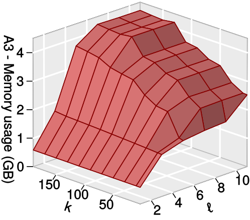
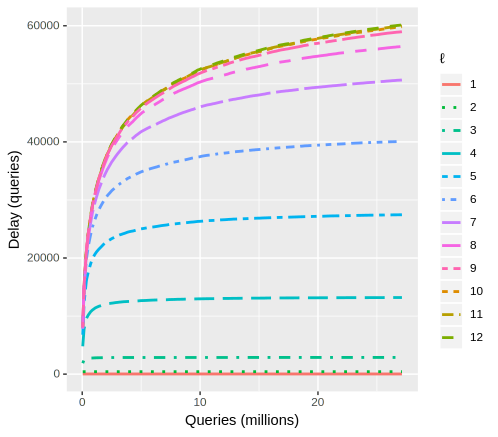

Contributions to Lifelogging Protection in Streaming Environments
David Pàmies-Estrems
Advisors: Dr. Jordi Castellà-Roca, Dr. Joaquin Garcia-Alfaro
PhD Thesis Defense
Doctoral Programme in Computer Science and Mathematics of Security Departament d'Enginyeria Informàtica i Matemàtiques Universitat Rovira i Virgili- Introduction
- State of the art
- Contributions
- Working at the WSE Side to Generate Privacy-Preserving User Profiles
- A Real-Time Query Log Protection Method for WSEs
- Lifelogging Protection Scheme for Internet-based Personal Assistants
- Conclusions and Future Work
Introduction
Global Datasphere
2018
Global Datasphere
2018
2025
30% real-time

> 5 000 daily interactions
Textual Queries
People use a Web Search Engine
Or a Personal Assistant:
- Few keywords
- Fast results

thompson water seal
Convenience + Growing data = High popularity
Log structure
Service provider adds metadata
Each query log:
116874 thompson water seal 2006-05-24 11:31:36 1 http://www.thompsonswaterseal.com
| $\downarrow$ UserID |
$\downarrow$ Query |
$\downarrow$ Time |
$\downarrow$ Clicked URL |
Query logs
Queries may contain sensitive information Medical, religious, sexual, political...
116874 thompson water seal 2006-05-24 11:31:36 1 http://www.thompsonswaterseal.com
116874 express-scripts 2006-05-30 07:56:03 1 http://www.express-scripts.com
116874 express-scripts 2006-05-30 07:56:03 2 http://member.express-scripts.com
116874 knbt 2006-05-31 07:57:28
116874 knbt.com 2006-05-31 08:09:30 1 http://www.knbt.com
117020 naughty thoughts 2006-03-01 08:33:07 2 http://www.naughtythoughts.com
117020 really eighteen 2006-03-01 15:49:55 2 http://www.reallyeighteen.com
117020 texas penal code 2006-03-03 17:57:38 1 http://www.capitol.state.tx.us
117020 hooks texas 2006-03-08 09:47:08
117020 homicide hooks texas 2006-03-08 09:47:35
117020 homicide bowie county 2006-03-08 09:48:25 6 http://www.tdcj.state.tx.us
117020 texarkana gazette 2006-03-08 09:50:20 1 http://www.texarkanagazette.com
117020 tdcj 2006-03-08 09:52:36 1 http://www.tdcj.state.tx.us
117020 naughty thoughts 2006-03-11 00:04:40 1 http://www.naughtythoughts.com
117020 cupid.com 2006-03-11 00:08:50
Record Linkage
117020 hooks texas 2006-03-08 09:47:08
117020 homicide hooks texas 2006-03-08 09:47:35
117020 homicide bowie county 2006-03-08 09:48:25 6 http://www.tdcj.state.tx.us

Identifiers + Quasi-identifiers = Identity
Modifications do not guarantee protection
Lifelogging
Personal AssistantsSmartPhones, SmartGateways, SmartWatches, Activity Bands
 Continuous record of one's daily activities
Continuous record of one's daily activitiesUsers' profiles
Weighted set of interestsscience, health, society, sports, etc.
Used for:
- Personalization
- Usability
- Marketing
- Research

Monetization
Selling data $\rightarrow$ Economic viabilityMay expose sensitive information
Protect users’ data, allowing useful profiles.
State of the Art
Privacy Enhancing Technologies
| Client side |
|
| Collaborative |
|
| Server side |
|
Privacy Enhancing Technologies
| Server side | |
 Fixed-length Fixed-length |
Data-stream |
|
|
Privacy Enhancing Technologies
| Server side | |
| Fixed-length |
Data-stream |
|
|
Protect unstructured data on real-time, retaining data utility.
Probabilistic \(k\)-anonymity
- Without modifying logs
- A log indistinguishable from \(\geq k-1\) other logs
- Re-identification probability \(\lt 1/k\)

Probabilistic $k$-anonymity: $k=3$


Probabilistic $k$-anonymity: $k=3$
Probabilistic $k$-anonymity: $k=3$
Probabilistic $k$-anonymity: $k=3$
Probabilistic $k$-anonymity: $k=3$
Probabilistic $k$-anonymity: $k=3$
Probabilistic $k$-anonymity: $k=3$
Working at the WSE Side to Generate Privacy-preserving User Profiles
64(C):523–535, December 2016
Q1, I.F.: 2.981, 15 cites
Proposal
WSE anonymizer
$\downarrow$
Classifier
-
Natural language
+ DB Recommendations
+ DB Entropies
+ DB Categories
= Categorization
Anonymizer and profiler

- Top level categories
- Split users and queries
- Randomly matched
- Update user profiles
Restriction
Do not repeat original pairs
De-anonymizers
Try to reconstruct original logs
Pick a random query from a category $|C|>k$
User:
- Random, using the restriction
- More current appearances in category
- Most likely profile
- Similar profile and more current appearances
Heuristics
Without restriction
- Constant $k$
- % not anonymized
With restriction
- $k$ > 200
- All anonymized
$\delta \rightarrow$ Memory consumption

Privacy

Speed and Resource consumption
| Time/log($\mu$s) | Queries/second | |
|---|---|---|
| Classifier | 1.503 | 665 |
| Anonymizer | 22 | 45.454 |
| Profiler | 267 | 3.745 |
| Mem.(MiB) | |
|---|---|
| Classifier | 112 |
| Anonymizer | 10 |
| Profiler | 12 |
Utility
Classified 74% $\rightarrow$ Recommendations 85%
59% Correct
| Arts | 57% | Recreation | 55% |
| Business | 77% | Reference | 69% |
| Computers | 65% | Regional | 69% |
| Games | 56% | Science | 47% |
| Health | 88% | Shopping | 70% |
| Home | 81% | Society | 57% |
| Kids and Teens | 38% | Sports | 40% |
| News | 17% | World | 31% |
A Real-Time Query Log Protection Method for Web Search Engines
Vol. 8, 87393–87413, May 2020
Q1, I.F.: 4.098
Motivation
- Preserve as much data utility as desired
- Customizable levels of categorization
- Formal and experimental proofs
Proposal
...
$\downarrow$
Restrictions
A given query associated to an anonymized log must not be assigned to the same user that issued the query on the unanonymized log.
When creating an anonymized query log, user must be selected randomly between at least $k$ different user values.Therefore, $U_x^h$ and $Q_x^h$ may have different size
Maximum probability of re-identification
\begin{align} P(Re(r'_j)=Id(r'_j)) \leq \max\limits_{\forall x,h} \frac{|U_x^h \cap {Id(r'_j)}|}{|U_x^h|} \end{align} \begin{align} \forall x,h,Id(r'_j) \rightarrow |U_x^h \cap {Id(r'_j)}| \in {0,1} \end{align} $P(Re(r'_j)=Id(r'_j)) \leq \frac{1}{k}$Probabilistic $k$-anonymity!
Full Architecture
Experimental Results
Classifier85% $\rightarrow$ 98% original logsAnonymizer
Hierarchical classification: $1 \leq n \leq 13$.
$3 \leq k \leq 200$Profiler
$1 \leq \ell \leq 13$
Determine loss of data utility
$3 \leq k \leq 90$ and $1 \leq \ell \leq 13$
De-anonymizer
Record-linkage 1Randomly match users and queriesRecord-linkage 2
(Same category + Restrictions)
User more times on a categoryRecord-linkage 3
User profiles. Balances current and historical values
Privacy study


Privacy study
Kolmogorov-Smirnov
($D=0.08$, $p$-value$=0.9977$)
Utility study
Preservation of original user's interest:

Using Earth Mover's Distance
Speed


Resource Consumption
Lifelogging Protection Scheme for Internet-based Personal Assistants
Internet-based Personal Assistants (PA)
Combine voice control and search
To assist in household activities:
- Scheduling meetings
- Finding locations
- Reporting of cultural events
- Sending messages
Lifelogs about users
Stored by big Internet players

Queries of a PA
| Field | Sample |
|---|---|
| User id | 150922 |
| Query | Quelle est la météo de demain |
| Location | https://google.com/maps?q=48.624924,2.443970 |
| Time | 15 Jun 2020, 14:09:53 |
| Products | Assistant |
Sanitizable Signatures
- Signer creates a ciphertext $c$
- Divides $c \in \{0,1\}^*$ into $N$ blocks $m_1,..., m_N$
- $ADM \in {1,N}$ admissible modifications
- Signer signs $c$ using a key related to sanitizer
- Sanitizer can modify $ADM$ parts of $c$
- Keeps the resulting signature valid
- Satisfy unlinkability, and limit modifications
General Data Protection Regulation (GDPR)
- Data Subject: generates data
- Data Controller: define processing purpose
- Data Processor: processes personal data
Roles relevant to lifelogging environments
Current architecture

Main Service: Data controller
With access to queries, commands and control logs
With interest on accessing anonymized data
Architecture change
$\downarrow$

Proposed architecture
Identity Screener: compliance of privacy
Container of privacy filters for data protection
Auditor: Auditing agent
Accountability and users' consent
Extended architecture (request)

Extended architecture (response)

Conclusions and Future Work
Proposed system
Publish protected query logs reassigning usersOver unstructured data streams
Allows configuration$k$ adjusts privacy, $\ell$ adjusts utility

Integration
In a Personal Assistants environmentArchitecture with anonymization and signatures
Proposed in terms of GDPRw.r.t. cooperation between actors
Role and needs of the organizations to monetizeLimit privacy disclosure, keep data utility
Requirements
Lifelogging stream anonymizationProposed, developed and evaluated
Preserves utility, useful for 3rd partiesAllows monetization
Fast protection + high level of privacyHandles Google's average load
Future Work
Additional categorizers may be proposedi.e. artificial intelligence systems
Dynamic $\ell$-values & Distributed nodesGlobally or per branch
Experiments with logs' timeIntegration in other contexts

Thank you
Annex
1 - Classifier
Additional tasks:
- Recommendations
- Entropies
- Categories
TOR + Privoxy
Fast NLTK version

2 - Anonymizer Algorithm
Inputs: $k$, $\ell$ and $R$. Output: $R'$
\ForEach{$r_j \in R$}{
// Get current user, query text and full query categorization\\
$u, q, c \gets r_j$\;
// Truncate categorization to level $\ell$\\
$cat \gets \{\gamma_s^1, ..., \gamma_{s^*}^\ell \} \in c$\;
// Add current user to users' category set\\
$users[cat] \gets u$\;
// Add current query and full categorization to queries' category set\\
$query[cat] \gets \{q, c\}$\;
// While there are more than $k$ distinct users on the current category\\
\While{$distinct(users[cat]) > k$}{
// Select and remove a random query and categorization from the category's set\\
\textbf{pop} random \{$q', c'\} \in query[cat]$\;
// Select and remove a random user from the category's set, distinct from the original user related to the query\\
\textbf{pop} random $u' \in users[cat], u'\neq Id(q)$\; %q.user $\;
// Send to the output the selected user, query and category\\
\textbf{send} $u', q', c'$\;
}
}
2 - Utility study
% of logs generated as an output
2 - Privacy study

Final $\mid Q \mid$-value
2 - Delay
$\ell \leq 6 < 1s$ $\ell \leq 13 < 2 s$
2 - RESOURCE CONSUMPTION
| $\ell$ | Added categories | Total categories | $\ell$ | Added categories | Total categories |
|---|---|---|---|---|---|
| 1 | 16 | 16 | 8 | 26 914 | 167 123 |
| 2 | 537 | 553 | 9 | 16 863 | 183 986 |
| 3 | 5 523 | 6 076 | 10 | 7 863 | 191 849 |
| 4 | 21 768 | 27 862 | 11 | 2 143 | 193 992 |
| 5 | 36 806 | 64 668 | 12 | 441 | 194 433 |
| 6 | 35 543 | 100 211 | 13 | 72 | 194 505 |
| 7 | 39 998 | 140 209 |